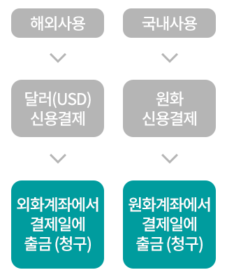

-
상품이용 전 반드시 혜택별 상세안내 및 서비스 제공조건을 확인하시기 바랍니다.
밀리언달러 하나카드
하나의 카드에 원화, 외화 2개의 계좌를 연결하여 해외 이용 시 달러(USD)금액 그대로 외화계좌에서 결제일에 출금되며, 국내 이용 시 원화계좌에서 결제일에 출금되는 카드입니다.
외화결제 주요내용

- 해외사용 > 달러(USD) 신용결제 > 외화계좌에서 결제일에 출금(청구)
- 국내사용 > 원화 신용결제 > 원화계좌에서 결제일에 출금(청구)
-
외화계좌는 하나은행 밀리언달러 통장 계좌만 가능합니다.
-
밀리언달러 하나카드로 사용한 해외 일시불, 해외 단기카드대출(현금서비스)은 결제일에 달러로(USD)로 자동출금되며, 해외ATM 출금은 바로 달러(USD)로 결제/출금됩니다.
외화결제 유의사항
-
정상결제건의 경우 외화계좌에서 결제일에 달러로 출금됩니다.
-
정상결제 외 모든 결제 또는 환급 거래는 원화결제계좌에서 출금 및 환급이 됩니다.
(일부결제금액이월약정(리볼빙), 승인(매출)취소 환급, 선결제, 선결제 취소, 환급, 청구보류, 연체, 창구결제, 가상계좌, 연회비, 수수료 등) -
해외가맹점에서 달러 외 제3국통화(원화포함)로 결제할 경우 국제브랜드사에서 정한 환율에 따라 미달러(USD)로 환산되어 외화계좌에서 결제일에 출금됩니다.
-
카드사 접수 후 취소 된 해외 이용건은 원화로 환산되어 원화계좌로 환불됩니다.
외화결제 유의사항 상세안내
해외 카드사용금액 연체에 관한 유의사항
-
외화결제계좌를 통해 해외사용금액 결제 후 잔액 부족으로 미납될 경우 연체로 처리되며, 연체에 따른 연체이자가 발생될 수 있으므로 유의하시기 바랍니다.
-
결제일 후 미납된 해외사용금액은 [해외결제 및 기타안내]에 따라 원화로 계산되어 원화계좌로 출금 요청합니다. 따라서, 해외사용금액 연체 시에는 반드시 원화결제계좌로 연체금액을 입금하여주시기 바랍니다.
-
정상결제일 후 미납된 해외사용금액에 대해 청구 시 원화금액은 미납된 카드 사용 건별 매입시점에 확정된 원화결제금액을 기준으로 합니다.
-
해외결제 및 기타안내
-
해외 이용 금액(해외사이트 거래 포함)이 원화로 청구될 경우, 미화(USD) 기준 거래 금액에 접수일의 하나은행 최초고시 전신환매도율을 적용한 원화금액으로 청구됩니다.
-
밀리언달러 하나카드는 국제브랜드수수료와 해외이용수수료가 면제됩니다.
-
해외 카드사용금액 선결제 시 유의사항
-
해외사용금액 선결제는 원화로만 가능하며, 매입시점 원화로 확정된 결제금액을 기준으로 청구/결제됩니다.
-
선결제 후 잔여 해외사용금액에 대한 결제금액은 외화결제계좌를 통해 달러(USD)로 청구/결제됩니다.
단, 해외사용금액을 '부분선결제'한 경우 잔여금은 원화로 청구됩니다.-
홍길동 회원이 4월에 A 식당에서 $100 사용, B 매장에서 $50 사용하여 2건의 해외사용금액의 정상결제일이 5월 21일인 것으로 가정한 경우
-
선결제 후 잔여금액 정상결제일에 청구되는 방식
-
A식당 $100 (정상결제일 전) 5/12, $100 전액 원화로 선결제
-
B매장 $50 (정상결제일) 5/21, 달러로 $50 청구/결제 (외화계좌)
-
-
'부분선결제' 후 잔여금액 정상결제일에 청구되는 방식
-
A식당 $100
(정상결제일 전) 5/12, $70 원화로 부분 선결제
(정상 결제일) 5/21, 원화로 $30 청구/결제 (원화계좌) -
B매장 $50
(정상결제일) 5/21, 달러로 $50 청구/결제 (원화계좌)
-
-
-
A 식당 $100의 환산된 원화결제금액 110,000원으로 가정 시
-
$30 (선결제 후 잔여금액) ÷ $100 (최초 결제금액) = 30%
-
110,000원(원화결제금액) × 30% = 33,000원
-
'부분선결제' 후 잔여금액 최종 원화로 청구 및 결제되는 금액은 33,000원
-
-
-
해외 카드사용금액 선결제 취소 시 유의사항
-
해외 카드사용금액 선결제를 전액 취소한 경우, 해당 금액은 고객님의 정상결제일에 달러(USD)로 청구/결제됩니다.
-
단, 해외 카드사용금액 선결제를 일부만 취소한 경우, 특정 거래 1건이 분할되어 부분 잔여 결제금액이 발생할 수 있으며 그 잔여결제금액은 원화로 청구/결제됩니다.
원화청구방식은 상기「해외사용금액 선결제 시 유의사항 ② '부분선결제' 후 잔여금액 정상결제일에 청구되는 방식 」을 참고바랍니다.